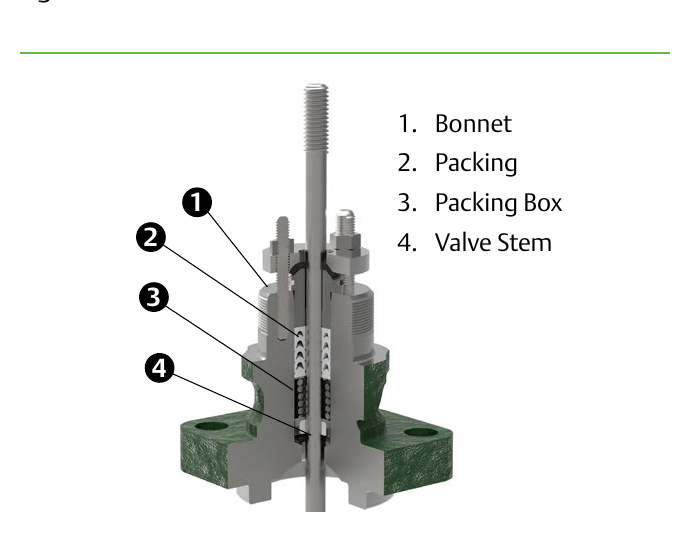

Bonnet Assembly — Bonnet, Packing, Packing Box, Stem

- Bonnet — the pressure-retaining casting the stem passes through
- Packing — seals against the stem
- Packing box — the bored recess cut into the bonnet the packing sits in, not the casting as a whole
- Valve stem
After Control Valve Handbook, 6th ed., Fig. 1.6 (p.19) — used directly, own printed callouts 1–4 retained as printed. Component Index: cvh-cmp-bonnet-assembly.